Each one is a working first screen in your teal, built from real Repeval output: the demo shop run that found the cart bug, and the ts-lib run that caught a changed total. Open the live versions to see the motion. Pick one and I'll build the full prototype in it.
A run is a station board. Each step of the pipeline is a row that flips to passed, running or bug, like trains leaving on time.
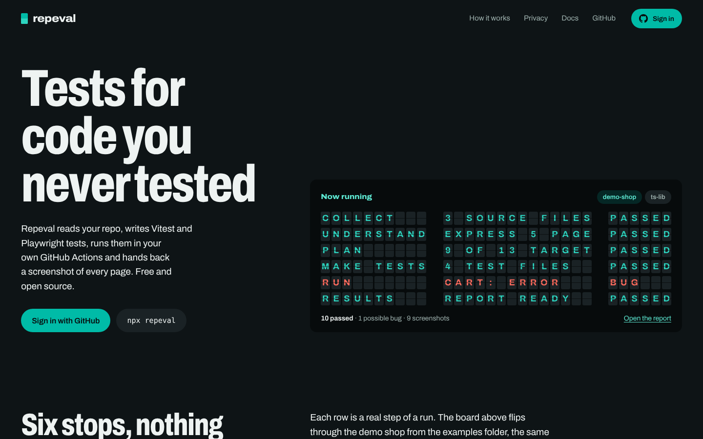
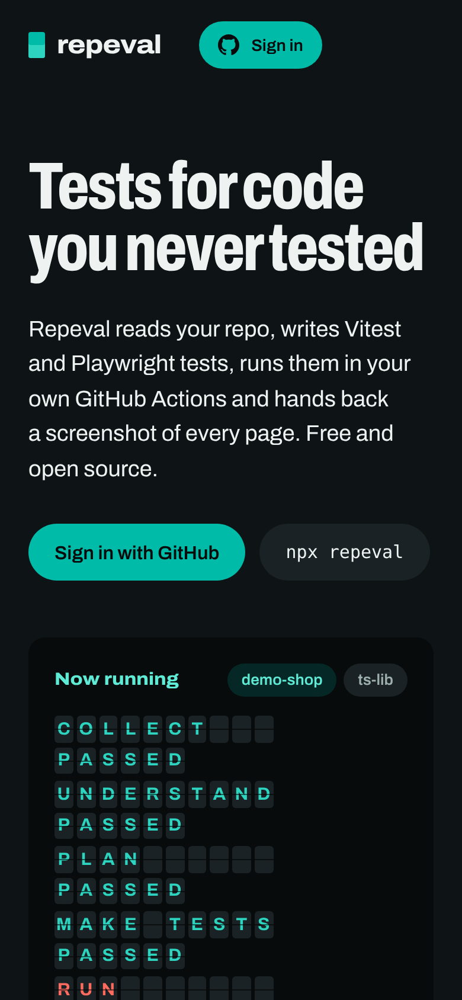
Switch between demo-shop and ts-lib and the board flips through that real run.
The live run screen is the board itself, with one row per workflow step from GitHub.
Dark and theatrical. Needs restraint so the flaps stay readable, not a gimmick.
The report is a photographer's proof sheet: every page of your app is a frame, and the bug comes back circled in grease pencil.
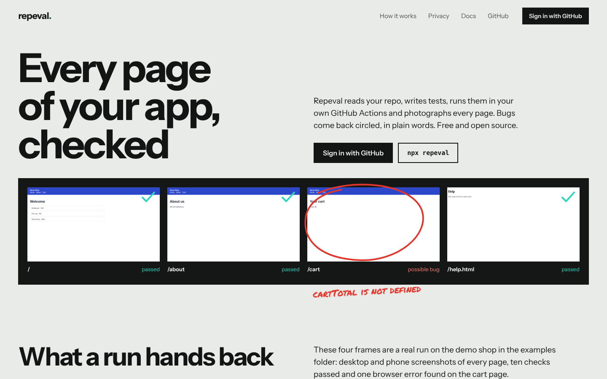
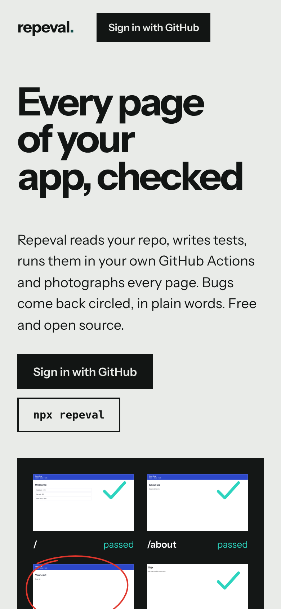
The pencil draws its circle around the cart page and writes the error in plain words.
The report screen becomes the sheet; the run screen fills frames in as pages are photographed.
Closest to what screenshot-testing tools already show. Strongest on proof, weaker on the "how".
The pipeline is one teal metro line with six stations. A run is a train travelling it; AI mode is a branch line opening soon.
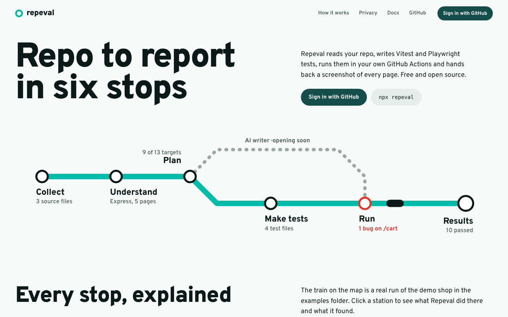
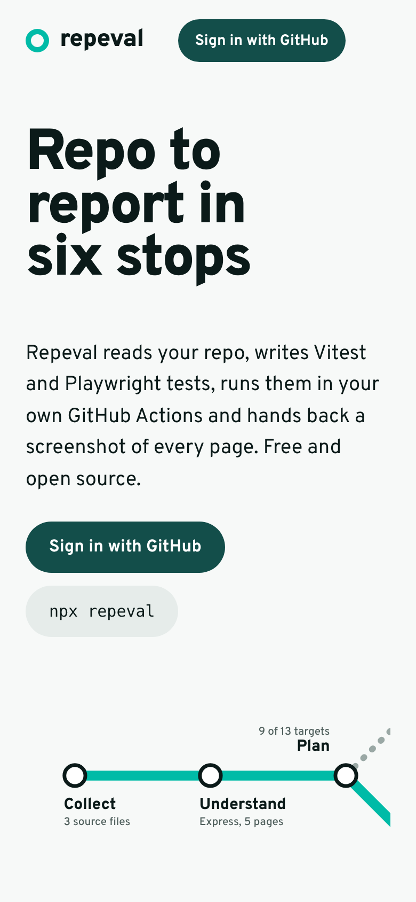
The train rides the line and stops at Run, where the bug station is marked red.
It's the same flow you already liked on the Repeval Flow board, as a map: easy for beginners to follow.
On phones the map needs its own vertical layout; the horizontal line only works wide.
Homework handed back: your code returns on ruled paper, ticked in teal where it works and circled in red pen where it broke.
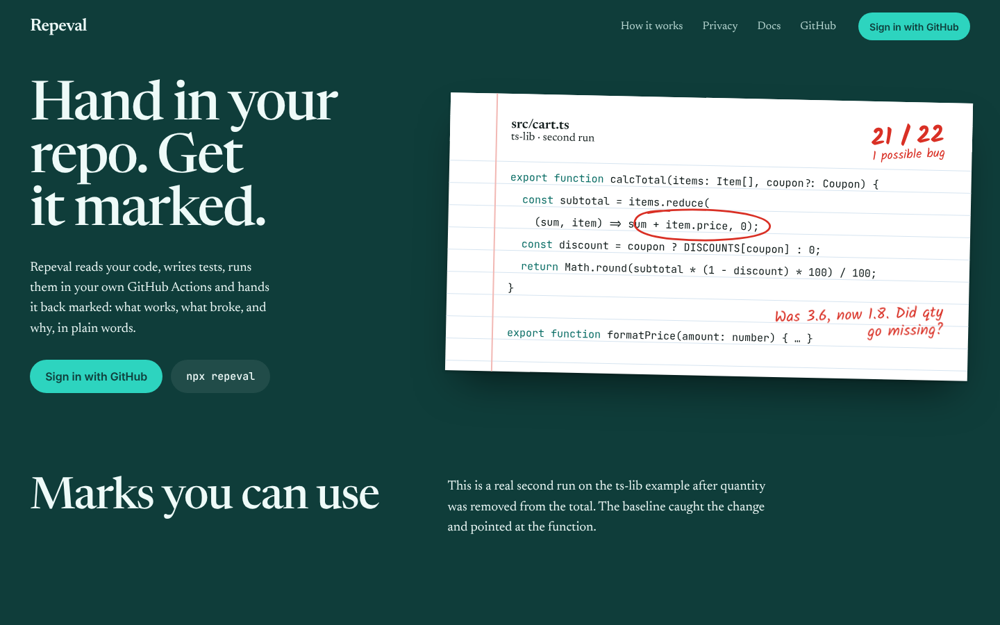
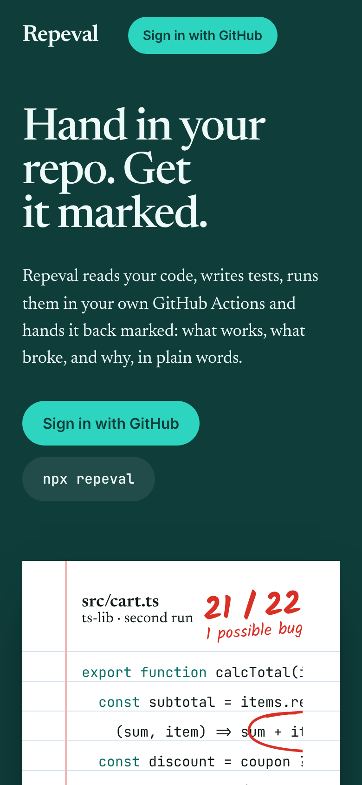
The red pen circles the line that changed and writes what went wrong: was 3.6, now 1.8.
Each failing function or page is "marked" with a short, friendly explanation.
Speaks loudest to students and beginners. Could feel like school to experienced devs.
This is the screen you watch on the website after pressing Run tests, while GitHub runs Repeval in your repo. It replays the real demo-shop run: steps, live output, screenshots arriving, then the result.
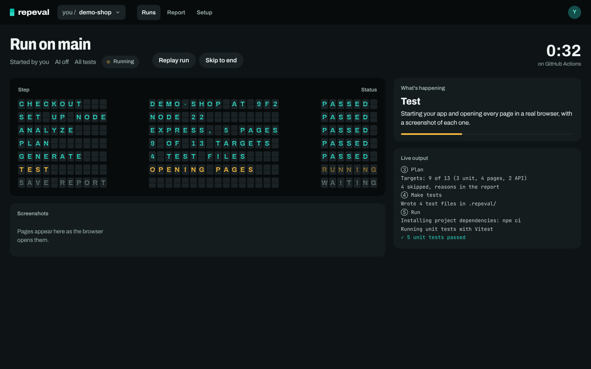
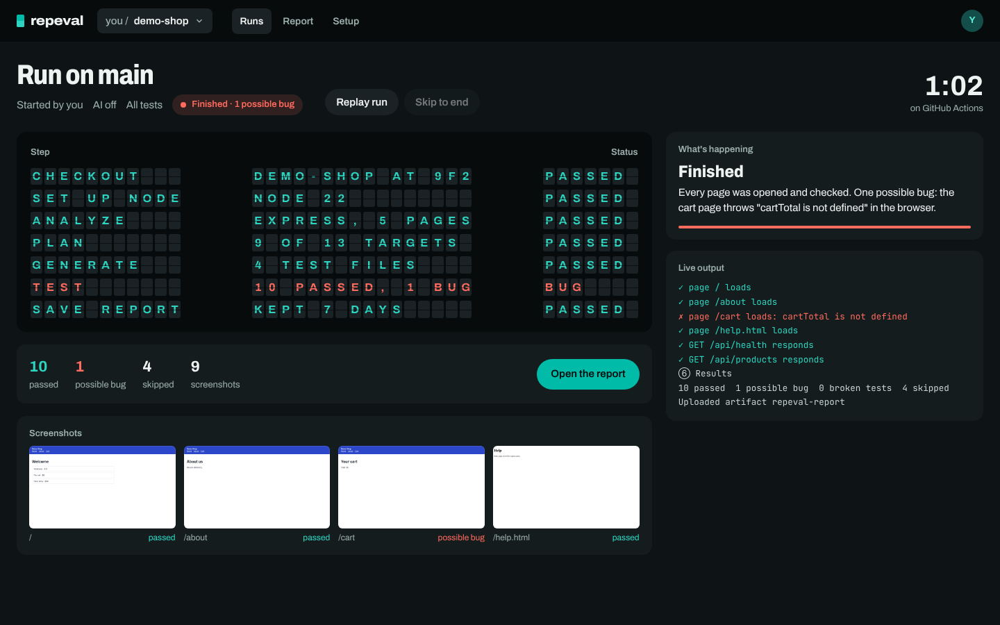
Left: during the Test step. Right: finished.
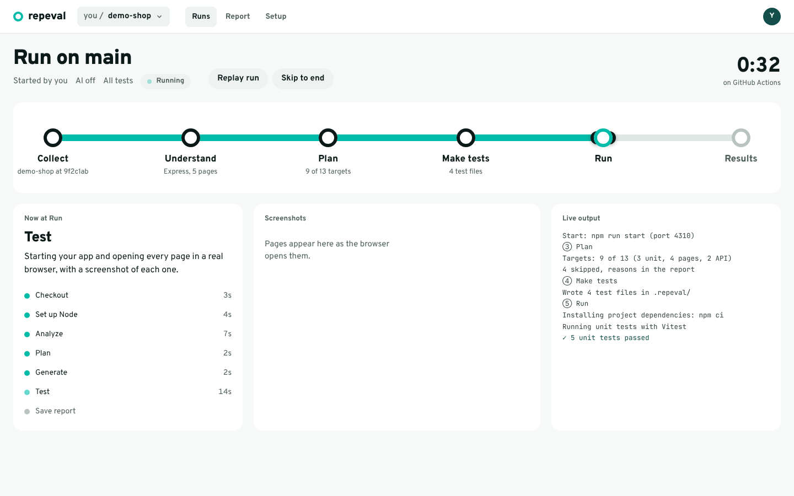
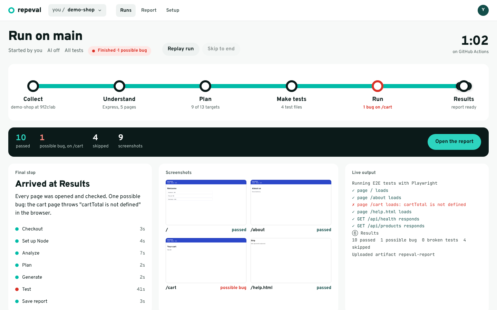
Left: the train at Run. Right: arrived, with the bug marked at Run.
The familiar layout: headline and actions on the left, the real report on the right, three short features below.
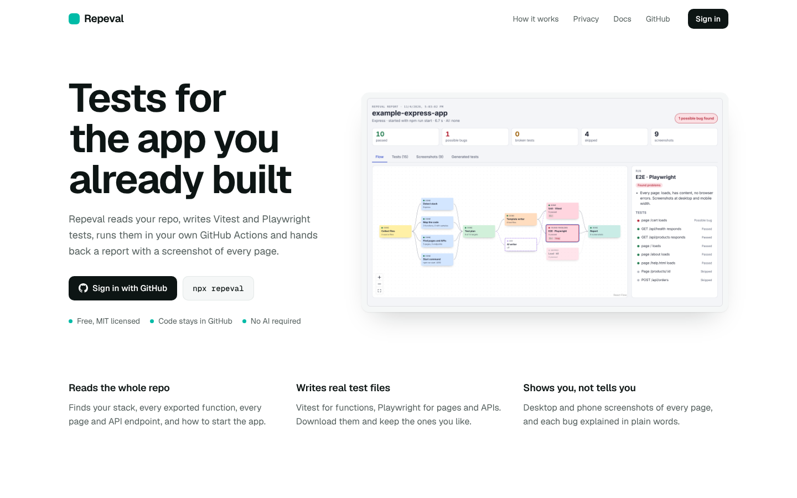
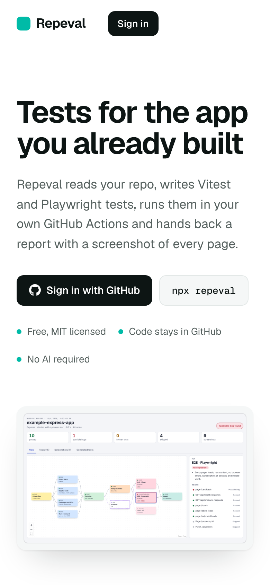
None by default: the report screenshot does the work.
Clean, expected app screens with no metaphor to learn.
Looks like every other developer tool, so it's easy to forget.